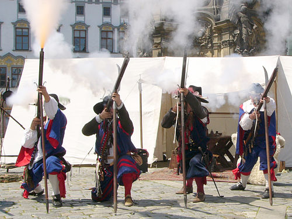
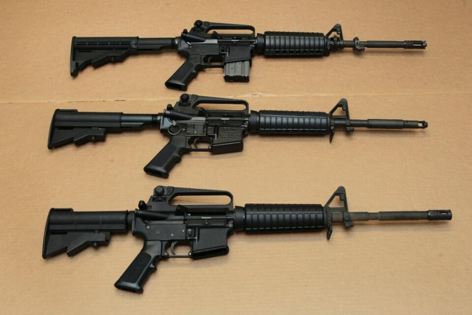

Renässansen
De fem viktigaste uppfiningarna under Renässansen

Musköt
Renänssansens kanske viktigaste uppfinning är musköten som uppfanns under 1500-talet. Musköten revolutionerade krig och gjorde det mycket farligare samt enklare att döda personer, med tillgång till en musköt kunnde en person slås mot flera andra motståndare som ej hadde samma utrustning.
Trettioåriga kriget

Ett av de största krigen under rennäsannsen var trettioåriga kriget som utkämpades i större delen i tyskland med det vanligaste vapnet musköten. De trettioåriga kriget utspelade sig mellan stormakter som Sverige, Frankrike, Spanien och det var ett relionsbaserat krig. Bilden över visar personer som efter kriget stjuter musköter för ett historiskt återskapande.
Muskötens uppbyggnad och teknisk utveckling

På bilden åvan så ser man en bild på hur hjullåset fungerar. Hjullåset är en uppfinning och teknik främst använd från början av renänssansen och 1500-talet och användes fram till slutet av 1600-talet. När skytten fällde ned hanen med avtryckaren slog den på hanen mot ett roterande hjul så att gnistor uppstod och antände krutet. Detta skapade en enorm kraft ut ur pipan och det är därför den var så farlig att möta.

Musköt må vara en av renässansens mest utvecklings givande uppfinningar, musköten var en av de första dödliga handhållna vapenen och den tekniska utvecklingen la aldrig riktigt ner den ideen utan fortsatta på den. Uppfinnanandet av musköten har lett till gevär -> automatvapen -> till dagens moderna automatvapen.
Ångmaskinens påverkan på sammhället och på ekonomin

Under renässansen designades en ångdriven maskin som använde ånga för att driva ett hjul. Maskinen gjorde att ånga riktades mot blad på ett hjul, vilket fick det att rotera. Detta liknar idén som senare kommer att liknar en turbin. Denna maskin gjordes för att öka produktionen och kunna arbeta snabbare.
.jpeg)
Ångmaskinens utveckling under renässansen utvecklandes till alla olika motorer som t.ex. bensinmotorn. Detta spelade stor roll för industriella revolutionen som senare kom. Dett komm för att utveckla sammhällets ekonomi extremt vilket lede till stor utveckling tekniskt. Denna enorma ekonomiska utveckling lede till att länderna blev rikare och mer tekniska.